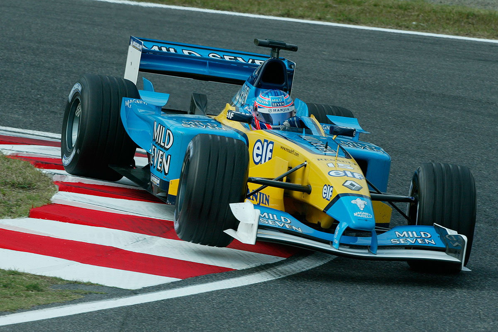
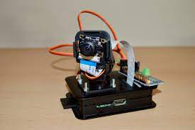
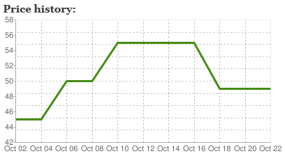

Personal Projects
This tab shows some of the repositories that I have used in my free time to acquire new knowledge or practice new skills. As I like Data & AI and I would love to develop my professional career in this area, don`t be surprised that the most used language is Python.

The goal of this project is to use my theorical knowledge to practice and gain some experience in the data engineering field. I have no work experience as a Data Engineer but I would like to develop my career in this path. Despite of having no experience, I have used some of the tools that are used in the role.
I created this code to periodically check if there is any graphic card available. If it find something, It will send me an email. I used this repository to learn how to scrap a website with Python and beautifulsoup4 library.

I developed a simple web server with python with the main goal to learn how to get different information from a camera. My Raspberry and my USB Camera were perfect to run this code. The secondary goal was to check how was my dog at home.

Web server app developed with python. It gathers information from different websites such as product name, kind, shop, date and price. It can also display the price evolution of a product and compare two different products.